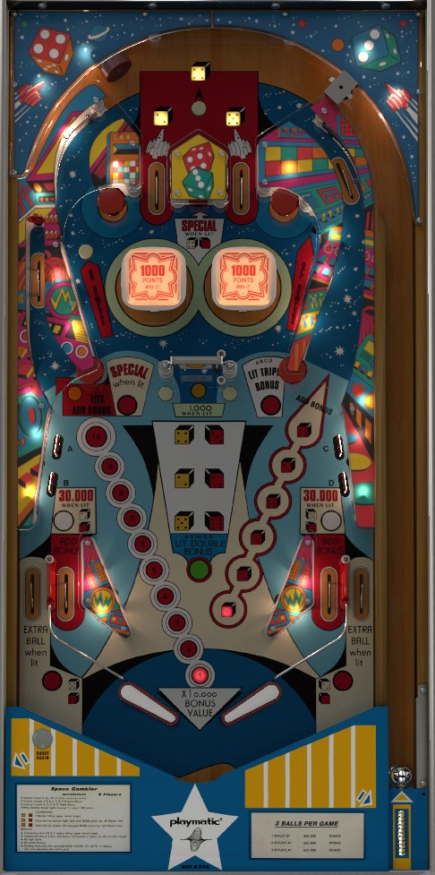

Increase the bonus multiplier to 2x by completing either the A+B or C+D drop targets, or 3x by completing both sets. Build base bonus by shooting the left dead end lane (after hitting drop target A) or the right orbit (any time). Once bonus is increased and multiplied, focus on dice pairings. Yellow dice are earned at the top lanes and top rollover button; red dice are earned from the right orbit, changing based on spinner hits. Making the dice combinations shown on the playfield can light in lanes for 30,000 points, out lanes for Extra Ball, or the left dead-end lane and top standup target for Special.
The below picture of Space Gambler's playfield was taken from the VPX recreation by Nestorgian et al.

Listed first instead of at the end because it's the most important thing to focus on at the beginning of each ball.
The drop targets in the lower left are labelled A and B on the left, and C and D on the right. Each target down scores 500 points. The left targets (A+B) and the right targets (C+D) are considered to be pairs. Knocking down both targets in one pair awards 2x bonus. Completing both pairs upgrades the bonus multiplier to 3x. Drop targets never reset mid-ball. On the VPX recreation of Space Gambler, if you hit both targets in a pair at the same time, the game will not recognize both being hit, potentially making a 3x or 2x bonus impossible if your shooting is too good. I am not sure if this is an issue with the VPX recreation or the original game code.
Bonus can be advanced in four places:
Each bonus advanced is worth 10,000 points in base bonus instead of the usual 1,000. Max bonus is 3x 100,000 = 300,000 points. There is no mid-ball bonus collect or bonus holdover of any kind.
Yellow dice are earned at the top of the table. The yellow 4 is the top rollover button (scores 1,000) while the yellow 2 and 5 are the left and right top lanes (score 10,000 each).
Red dice are earned at the right orbit. Each spin of the spinner rotates which die is lit at the right orbit: there are 6 possible options, which rotate between the red 1-2-3-6-2-6 with each spin of the center spinner. The right orbit also always scores 1,000 points and a bonus advance. The spinner scores 100 points per spin, or 1,000 per spin when lit, and it is lit for the rest of the ball by hitting the left dead-end target once.
If both the yellow 4 and red 3 are collected, the top center standup target between the bumpers scores a Special in addition to its usual 1,000 points. Collecting this Special resets the yellow 4 and red 3.
If both the yellow 2 and red 2 are collected, the left in lane will be lit for 30,000 points instead of its usual 1,000 and bonus advance, and the right out lane will be lit for extra ball in addition to its usual 10,000 points.
If both the yellow 5 and red 6 are collected, the right in lane will be lit for 30,000 points instead of its usual 1,000 and bonus advance, and the left out lane will be lit for extra ball in addition to its usual 10,000 points.
If all three yellow dice (4, 2, and 5) are collected and the base bonus is maxed out at 100,000 points, the target in the left dead-end lane will be lit for Special in addition to its usual 10,000 points. Collecting this Special always resets the yellow 2 and yellow 5, and also resets the red 2 and red 6 if you have them.
The red 1, which is lit at the right orbit 1/6 of the time, does not contribute to any scoring or playfield progress in any way.
The pop bumpers are lit at the start of each ball. They score 100 points when not lit, or 1,000 when lit. The standup target immediately above-right of the bumpers scores 1,000 points and turns the bumpers off. The rollover button just left of the bumpers scores 500 points and turns the bumpers back on.
Space Gambler has a conventional in/out lane setup. In lanes score 500 points and a bonus advance, or 30,000 points and no bonus when lit. Out lanes score 10,000 points, plus an extra ball when lit. Collecting the yellow 2 and red 2 lights the left in lane and right out lane. Collecting the yellow 5 and red 6 lights the right in lane and left out lane. The yellow 2 and 5 and the red 2 and 6 can be lost by collecting the left target Special. There is no center post, kickback, or gate of any kind. Slingshots score 100 points.
Special can be set to award an extra ball instead of a free game. If this setting is enabled, the match feature (which matches the last 3 digits of the score instead of 2, since all scoring is a multiple of 100 points) is disabled entirely. There does not seem to be a setting that assigns a point value to extra balls or Specials.